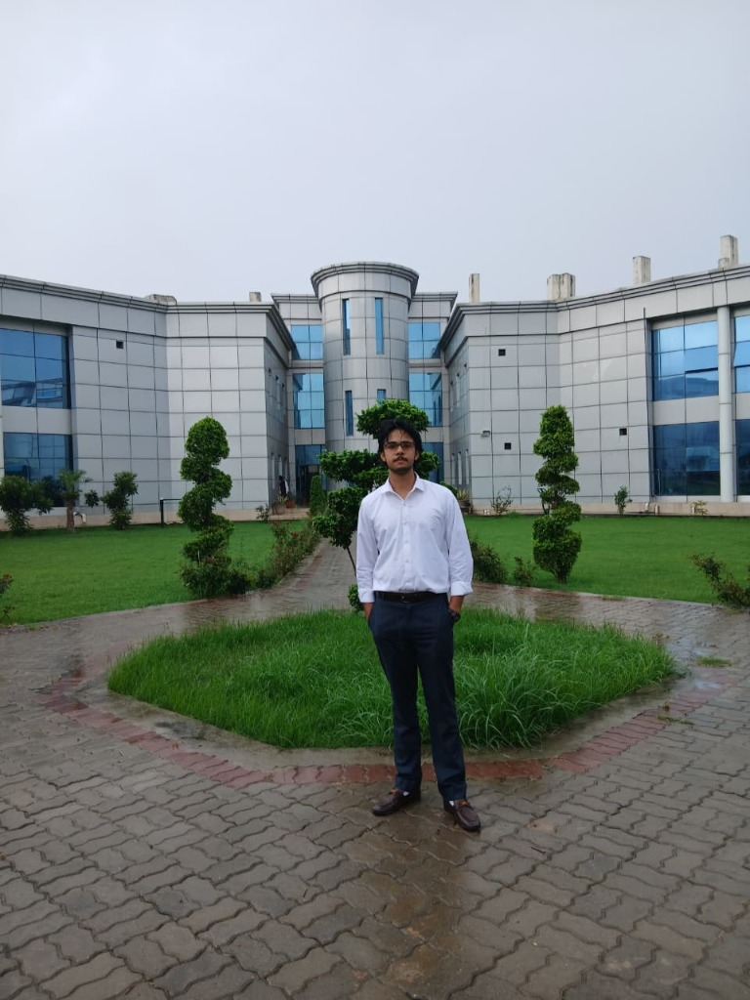
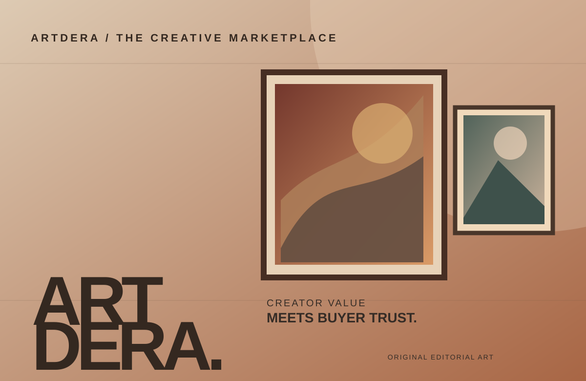
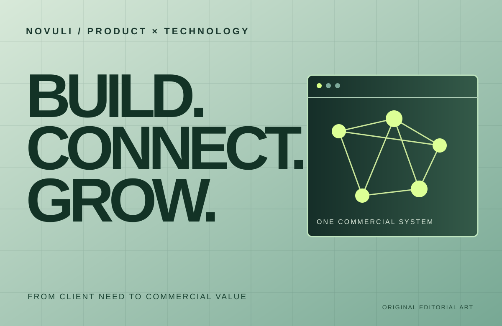
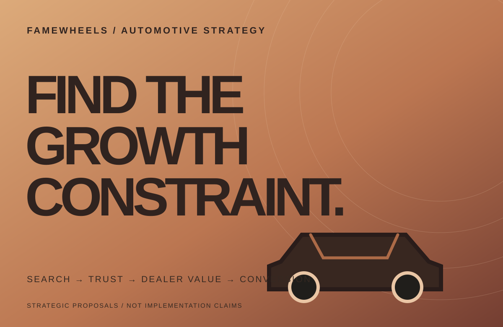

MUDASSIR AKHTAR / AN INTRODUCTION
I build from
the customer
backward.
Turning customer insight, business models, products, growth and teams into ventures built to move forward.

Build a reason
to matter.
MUDASSIR AKHTAR
TO VALUE ↗
Across cross-functional teams
From idea to early product
From 100+ applicants
Different industries, shared discipline
Selected experience documented in the personal-brand brief. No unverified revenue, client outcomes or inflated titles.
01 / MY POINT OF VIEW
I see the
whole board.
A business doesn't grow in separate departments. The customer experiences one system.
I work where business, product, growth, technology and human behavior meet — turning complexity into a clearer direction for the people building it.
02 / SELECTED BUILDS & STRATEGY
Proof is in
the work.

ArtDera
Turning fragmented artist discovery into a more structured marketplace for creators and buyers.

Novuli
Connecting client problems with the right digital product, implementation plan and commercial direction.

FameWheels
Finding the constraints in an existing automotive platform, from search and trust to dealer value.
Different roles, different scopes. Venture building, client work and strategic proposals are deliberately distinguished.
03 / THE METHOD
Growth is a
system. Not
a campaign.
Eight connected decisions. One customer-backward operating system. Explore a stage to see how I approach a business.
Find the real problem
Observe & understand.
Study customers, alternatives, objections and the market gap before deciding what to make.
04 / THE HUMAN BEHIND THE WORK
BE CURIOUS.
BUILD CLARITY.
KEEP MOVING.
PERSONAL NOTES
A WAY OF THINKING.
Curious about
why things work.
Why people choose. Why products fail. What makes an offer clear. Why teams lose speed. How an idea becomes a business.
That curiosity took me across marketplaces, technology, marketing, growth and leadership. I learn enough about each function to connect the pieces — and work with specialists to make them real.
The story behind the work ↗05 / LEADING THE WORK
Clarity creates
momentum.
I've led and coordinated 20+ people across design, development, growth, sales, content and operations. My job: give different specialists one business objective.
Venture building
Find the opportunity, shape the model, make the first version real.
Product & growth
Connect user behavior to positioning, conversion, retention and monetization.
Cross-functional leadership
Give design, development, marketing and sales one direction to execute.
06 / INSIDE THE BUILD
Not just ideas.
In the room.
FameWheels: conversations beyond the pitch.
Turning an idea into a story worth sharing.
Editorial placeholders are shown until approved photographs and video files are provided.
07 / FIELD NOTES
Ideas worth
thinking about.
ORIGINAL FIELD NOTE
Build from the customer backward.
Before a feature, campaign or sales pitch comes a more useful question: why should someone care?
ORIGINAL FIELD NOTE
Growth is a system, not a campaign.
More traffic only helps when the product, conversion journey and economics can support it.
ORIGINAL FIELD NOTE
Remove reasons not to buy.
The best product improvement is sometimes less friction, not more functionality.